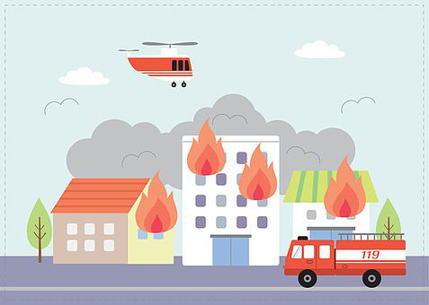

화재

화재란?
화재란 인간이 의도하지 않은, 또는 고의로 불을 낸 것을 의미하며, 소화시설을 이용해 끌 필요가 있는 화학적인 폭발현상
1.화재 발생 시 대처방법
1.불을 발견하면
2.엘리베이터가 아닌
3.
4.
5.출구가 없을 경우, 연기가 방안으로 들어오지 못하도록
"불이야!하고 큰 소리로 외쳐
다른 사람에게 알리고화재 경보 비상벨 누르기
2.엘리베이터가 아닌
계단을 이용
하고대피할 수 없을 때에는 옥상으로 대피한다.
3.
물에 적신 담요, 수건등
으로 몸과 얼굴을 감싼 채낮은 자세로 이동
한다.4.
문 손잡이
을 만져 보았을 때뜨겁지 않으면 문을 조심스럽게 열고 밖으로 나가기
5.출구가 없을 경우, 연기가 방안으로 들어오지 못하도록
물을 적셔 문틈을 옷, 이불로 막고 구조를 기다린다.
2.소화기 사용요령
1.소화기를 불이 난 곳으로 옮겨
2.바람을 등지고 서서
3.
4.소화기는 잘보이고 사용하기 편리한 곳에 두고
안전핀을 제거
한다.2.바람을 등지고 서서
호스를 불 쪽으로
향하게 한다.3.
손잡이를 움켜쥐고 빗자루를 쓸듯이
뿌린다.4.소화기는 잘보이고 사용하기 편리한 곳에 두고
햇볕이나 습기에 노출되지 않도록 관리한다.
3.화재 발생 시 119 신고요령
1.119에 전화하여 불이 난 내용을
2.
간단, 명료하게
설명한다.(ex, 저희집 주방에 불이 났어요. 2층입니다.)2.
주소를 정확하게
알려주고 소방서에서 알았다고 할 때 까지전화를 끊지 않는다.
4.고층 건물 위에 발생 시 대피 요령
1.탈출 할 때는
반드시 문을 닫고 나와야하고
열린문이 있을 경우모두 닫아야한다.
2.닫힌 문을 열 때는손등으로 온도를 체크
하고 뜨거울 경우 다른 비상통로를 이용한다. 3.밖으로 대피하지 못한 경우,창문이 있는 방
으로 들어가 구조를 기다린다. 4.방안으로 연기가 들어오지 못하도록문틈을 커튼 등으로 막고
주위에 물이 있다면옷을 적셔 코, 입을 막는다.
5.전화가 가능하면자신의 위치를 정확하게
알린다.